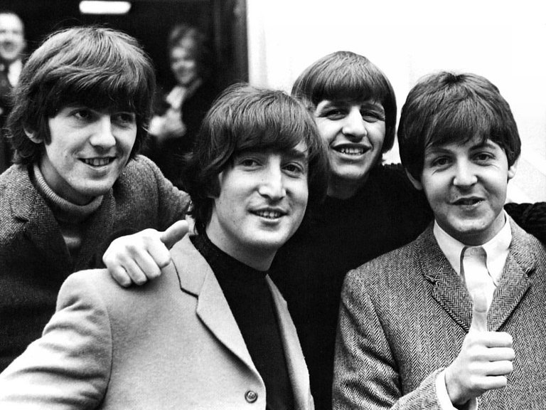

Os Beatles, uma das bandas mais icônicas da história da música, surgiu na cidade de Liverpool, na década de 1960, e deixou um legado duradouro que continua a encantar e inspirar gerações até os dias de hoje. Composta por quatro talentosos músicos - John Lennon, Paul McCartney, George Harrison e Ringo Starr - os Beatles revolucionaram a indústria musical e se tornaram um fenômeno global.
Com seu som inovador e letras cativantes, os Beatles exploraram diversos estilos musicais, do rock 'n' roll ao psicodélico, criando um vasto catálogo de músicas atemporais. Suas harmonias vocais distintas, melodias cativantes e letras perspicazes os destacaram como compositores excepcionais.
A influência dos Beatles ultrapassou as fronteiras musicais, refletindo-se também na moda, no comportamento e na cultura popular da época. Eles se tornaram símbolos do movimento de contracultura dos anos 60, com suas letras progressistas e mensagens de amor, paz e liberdade.
Embora tenham se separado em 1970, após uma década de sucesso, o legado dos Beatles permanece vivo. Suas músicas continuam sendo tocadas e admiradas por milhões de pessoas em todo o mundo. A capacidade dos Beatles de criar uma conexão emocional com seu público é atemporal, transcendendo gerações e fronteiras.
Os Beatles foram verdadeiros pioneiros da música popular, abrindo caminho para muitas bandas e artistas que vieram depois deles. Sua criatividade, originalidade e habilidade musical excepcional deixaram uma marca indelével na história da música e os colocaram no panteão dos grandes artistas de todos os tempos.
